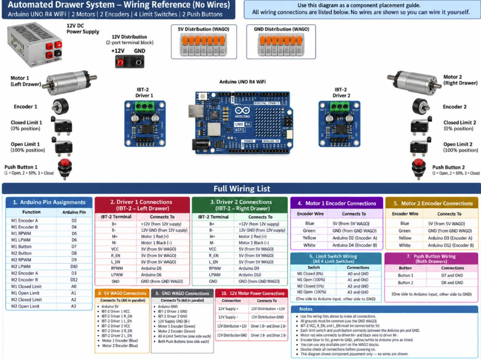
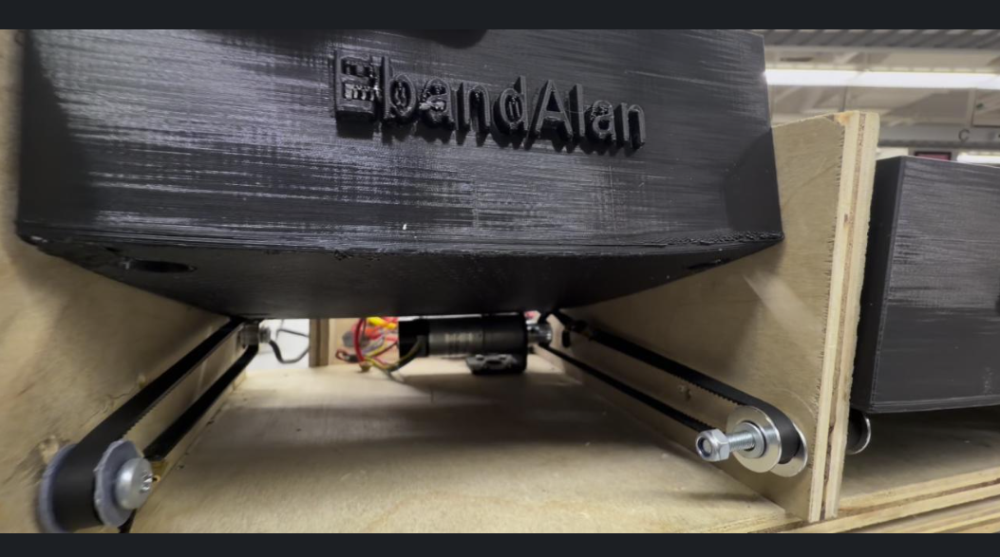
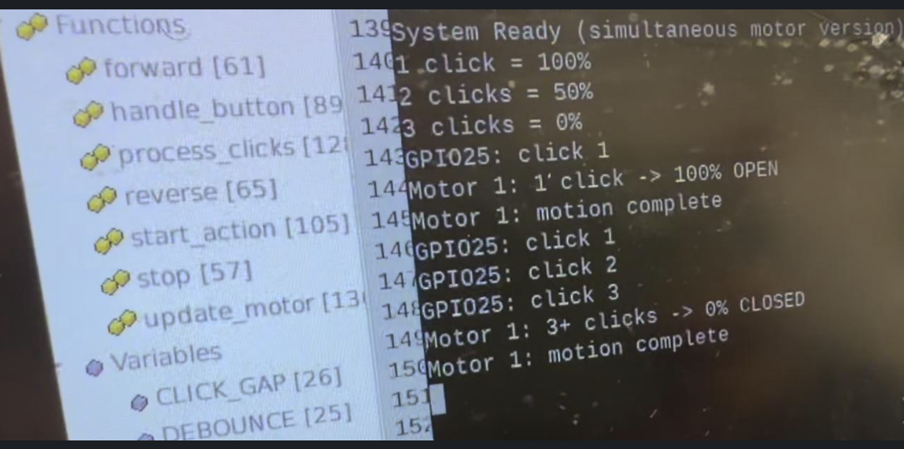

PROJECT OVERVIEW
From Timed Motion to Feedback Control
This project upgrades the earlier Raspberry Pi drawer system from timing-based positioning to closed-loop motor control.
An Arduino UNO R4 WiFi monitors quadrature encoders and limit switches while independently controlling two DC motors through IBT-2 motor drivers.
SYSTEM ARCHITECTURE
Controller & Hardware

The Arduino receives feedback from quadrature encoders and end-of-travel switches while generating the direction and PWM commands used by the motor drivers.
Encoder counts provide position feedback while the limit switches provide physical endpoint protection and a reference for homing.
PHYSICAL SYSTEM
Mechanical Drawer Platform

The control electronics operate a mechanical drawer system driven by DC gearmotors and GT2 belt-and-pulley assemblies.
The controller translates requested drawer positions into encoder-count targets and drives each motor until the appropriate position is reached.
TESTING & DEBUGGING
Runtime Monitoring

Serial output was used to observe system behavior during testing, including motor direction, encoder counts, target positions, homing behavior, and limit-switch activation.
Monitoring these signals made it easier to identify incorrect motor polarity, encoder direction, target calibration, and endpoint behavior.
CONTROL STRATEGY
Closed-Loop Positioning
Each drawer is assigned calibrated encoder-count targets corresponding to closed, half-open, and fully-open positions.
During movement, the controller compares the measured encoder position with the requested target and selects the required motor direction.
Motor speed is reduced as the drawer approaches its target to improve positioning behavior and reduce overshoot.
SAFETY
Homing & Endpoint Protection
ENGINEERING TAKEAWAYS
What This Project Demonstrates
The project demonstrates the difference between open-loop timed motion and closed-loop positioning. Rather than assuming a motor reaches a location after running for a fixed amount of time, the controller measures actual motion through encoder feedback.
It also provided experience integrating software, electrical wiring, sensors, motor drivers, and a mechanical system into one control platform.